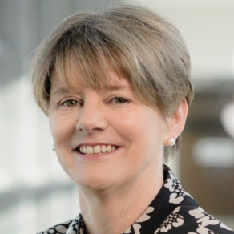
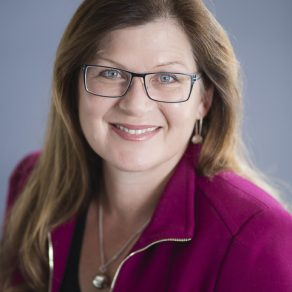
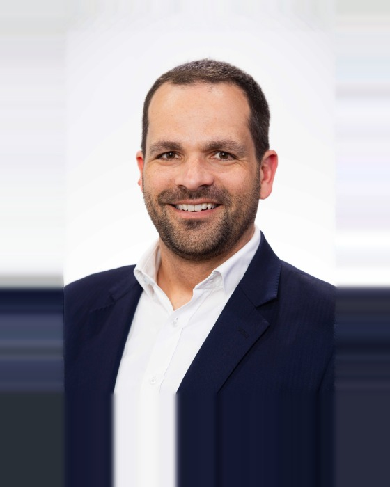
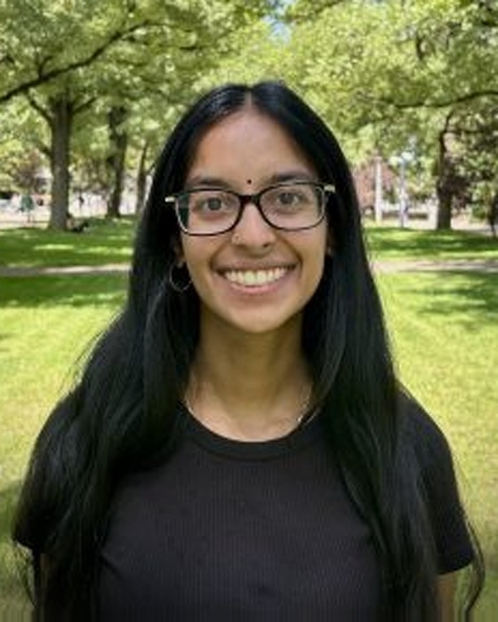
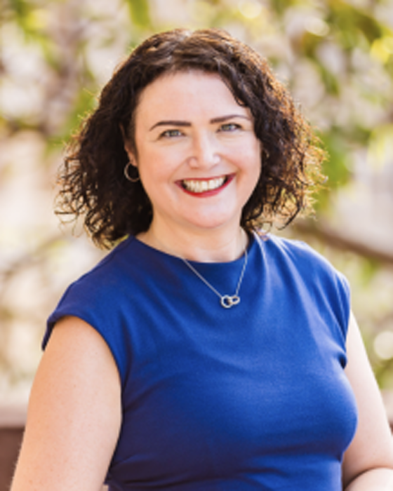
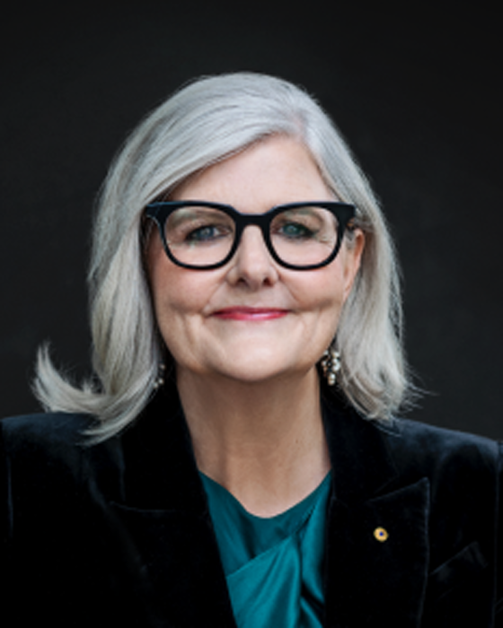
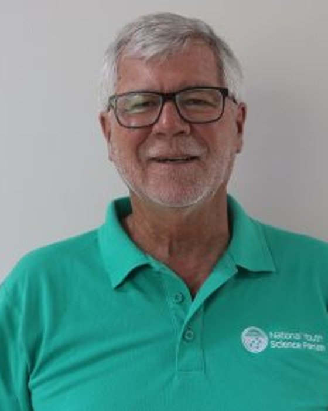
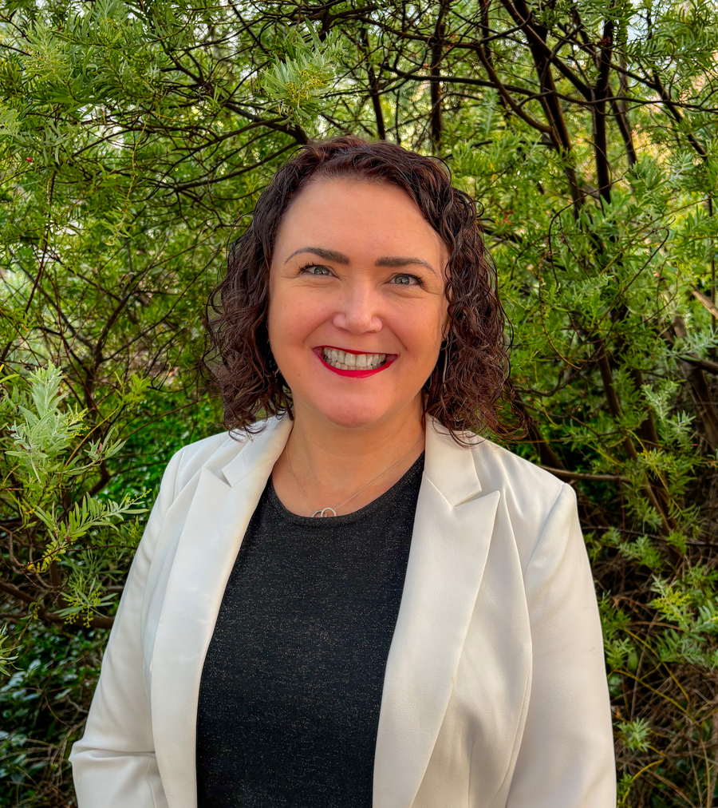
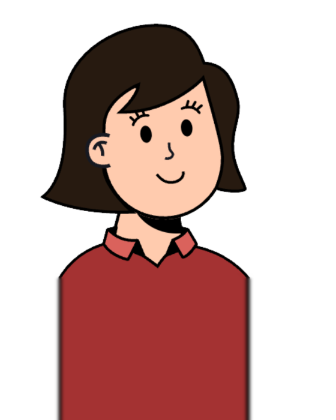
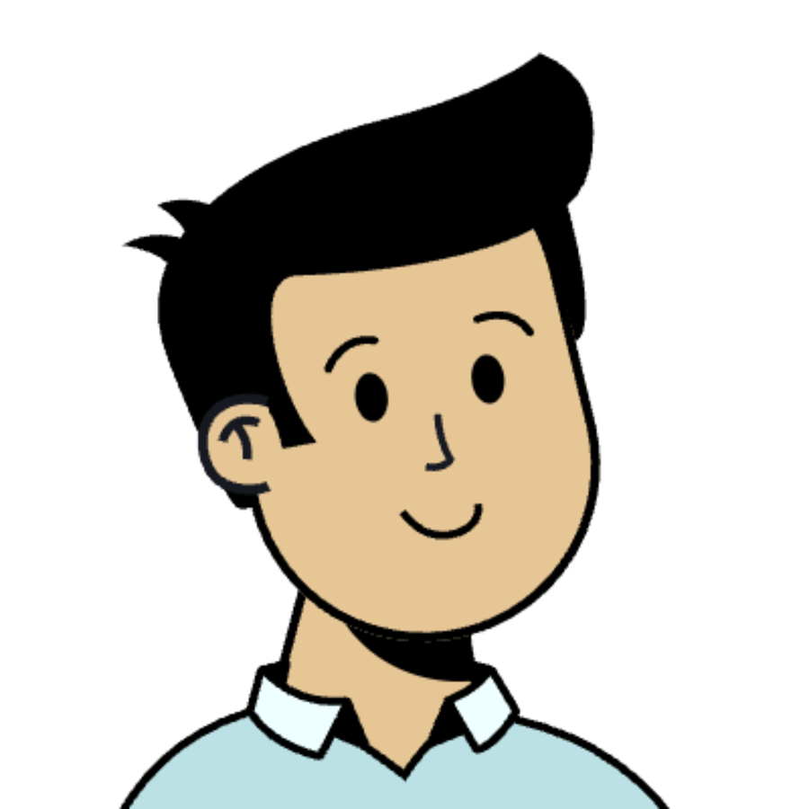

For more than 40 years, the National Youth Science Forum (NYSF) has been helping young Australians discover where a passion for STEM can take them.
We're an independent, not-for-profit charity that delivers immersive programs connecting students and young adults with universities, industry, researchers and each other. Our goal is simple: inspire curiosity, build confidence and help young people make informed decisions about their future.
Why NYSFWe communicate with integrity and openness, in everything we do.
We foster trust and inclusive collaboration across our community.
We drive clarity, accountability and results.
We champion wellbeing, kindness and compassion.
We recognise people and their achievements.
The people guiding NYSF’s mission.







The team bringing experiences to life.





Rotary has supported NYSF since the very beginning. Today, Rotary clubs across Australia continue to help young people access our programs through scholarships, volunteering and community support.
Find a Rotary club
Nine days living on a uni campus, experiencing STEM in the real world.
Explore →
Non-residential STEM experiences a little closer to home, held throughout the year.
Explore →
Step up as a leader and help run NYSF for the next cohort.
Explore →
Our three-day early-career conference built to equip you with the skills needed to succeed.
Explore →